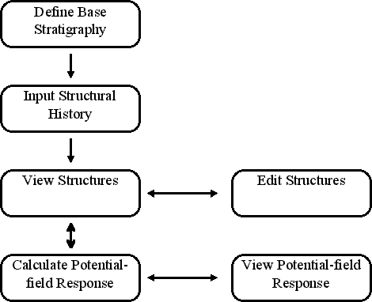
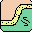
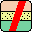
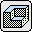
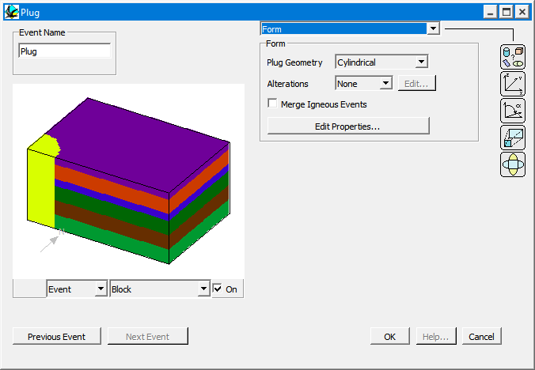
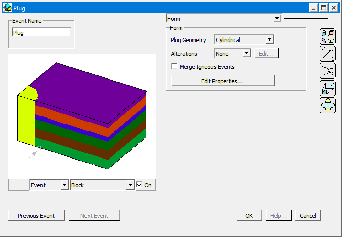
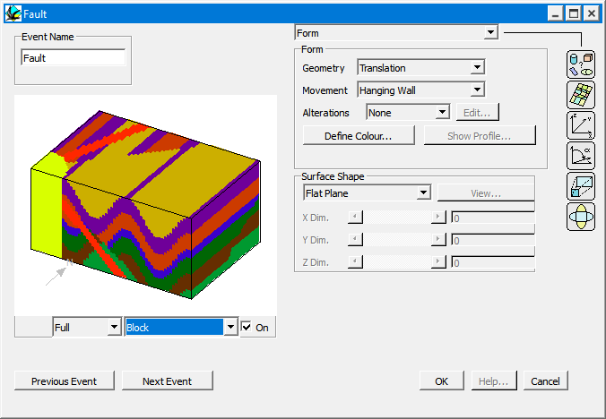
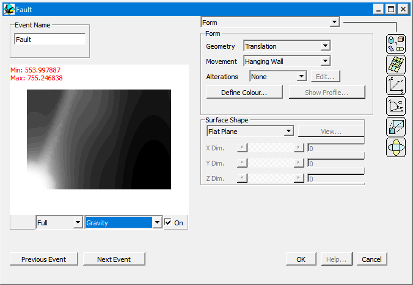

Program guide
Introduction
In order to characterise the complex three dimensional structures that often cause geophysical anomalies it is necessary to have some understanding of the structural history of an area. The basis for this program is the ability to construct a complex geological history as a succession of relatively simple structural, sedimentary and igneous events. Each geological history is defined as a sequence of kinematic events, and each event is defined by a set of orientation, position and scaling parameters. The structural modelling used in this program were first written by M Jessell as part of an MSc at Imperial College, London University, in 1981, as an interactive map creation package.
The program consists of introducing geoelogical events to effect an infinite volume of rock. The displacement equations are defined explicitly or implicitly with respect to flat planes, so that the curvature of the earth is ignored. The displacement equations within this program are all unary, that is there is a one to one mapping of all points before and after each deformation event. These displacement equations need to be specified in both their forward (Lagrangian) forms and their inverse (Eulerian ) forms. Since it does not matter whether the geology is deformed by complex equations which include terms for the orientation of the deformation, or by a separate rotation term and a simple equation, the latter approach was adopted, since this makes the development of new deformation styles much more straight forward.
In this model the meter is the unit of length, all planar features are defined by their dip and dip direction, all independent linear features are defined by their plunge and plunge direction, and all linear features on planes are defined by their pitch. The 000 direction is North, 090 is East & etc.
Noddy Program Flow
The general flow of the program Noddy consists of:
i. The definition of a initial layer cake stratigraphy
ii. The interactive development of a structural history
iii. The use of 2D and 3D visualisation tools such as maps and block diagrams.
iv. The calculation of 1D and 2D gravity and magnetic images.
v. The editing of the existing structural history and re-calculation of the anomalies to improve the match between real and calculated structure and geophysical response.
Since this program is completely interactive, the steps may be enacted in any order as the user sees fit, apart from the initial definition of a base stratigraphy at step 1.

Getting Started: Creating a structural and geophysical model using Noddy
When you start up Noddy you will be presented with three windows:
- Toolbar, which is a small window containing a set of icons for each deformation type
- History window into which these deformation events may be placed, edited and moved
- the status bar at the bottom of the screen providing status information.
The contents of the History window contains the currently defined history, and is thus blank on start up, unless you start from your own defaults (see Start-up files).
The complete set of icons and their meaning is shown below:

| Icon | Event | Icon | Event |
|---|---|---|---|
| Pointer (select and move events) | Base stratigraphy | ||
| Fold | Fault | ||
| Unconformity |  | Shear zone | |
 | Dyke | Plug | |
| Strain | Tilt | ||
| Foliation | Lineation | ||
 | Import block | Stop sign |
Hover the mouse over any Toolbar icon to see a tooltip with its name.
a) Defining the Base Stratigraphy
To define the Base Stratigraphy (which must be the first step in the construction of a history, unless a pre-existing history is read in from disk) click once on the Base Stratigraphy Icon: which will then become highlighted. If you then move the cursor over the History window, a dashed square will follow the cursor, and clicking in the History window will 'drop' that icon in the window.

As soon as the icon is dropped, a new window will open up which allows you to define a starting stratigraphy for your model.

This window displays a summary of the stratigraphic column on the left hand side, and allows you to edit this stratigraphy on the right hand side. For the moment, just click on the OK button in the lower right.
b) Defining a deformation event
Suppose you want to add a granite plug to this model, first select the plug icon  , by clicking on it and then dropping it to the right of the base stratigraphy icon in the history window. This will then open up the plug definition window, which demonstrates the standard deformation event window capabilities:
, by clicking on it and then dropping it to the right of the base stratigraphy icon in the history window. This will then open up the plug definition window, which demonstrates the standard deformation event window capabilities:

c) Previewing an event.
To get a preview of the effect of this event on the pre-existing geology (in this case the base stratigraphy), select Block from the Preview type menu. A Block diagram should now be drawn in the preview space.

d) Editing the position of an event.
To alter the position of this (cylindrical) plug, select either the Position/Orientation menu item from the Parameter Type menu, or click on the Position Icon. A new set of parameters related to position and orientation will appear, and alter the X & Y parameters which define the position of one point on the central axis of the cylinder.
Notice how the preview of the block diagram changes to reflect the altered position. If this slows you down too much, change the Preview type menu back to Plane and make all the changes before reselecting Block.
When satisfied with the position of the plug, click the OK button.
f) Adding another deformation event.
If we now want to add a fault, simply click on the Fault Icon  from the Toolbar, and drop it to the right of the Plug Icon in the History window. A Fault definition window will open up, and we can select the Block Preview menu item again. We can now choose between Event, History or Full Block Previews, by selecting from the timing menu list which has appeared to the left of the Preview Type menu. Event timing shows only the effect of this one event on the Base Stratigraphy; History timing shows the history up to and including the event currently being edited, and Full timing shows the effect of all events. In this case Full and History blocks have the same effect as this is the youngest event, as we are currently editing the youngest event.
from the Toolbar, and drop it to the right of the Plug Icon in the History window. A Fault definition window will open up, and we can select the Block Preview menu item again. We can now choose between Event, History or Full Block Previews, by selecting from the timing menu list which has appeared to the left of the Preview Type menu. Event timing shows only the effect of this one event on the Base Stratigraphy; History timing shows the history up to and including the event currently being edited, and Full timing shows the effect of all events. In this case Full and History blocks have the same effect as this is the youngest event, as we are currently editing the youngest event.

g) Previewing potential field anomalies.
Just as geological models may be previewed, the gravity and magnetic images may also be previewed by selecting, for example, Gravity from the Preview type menu, This will now calculate the gravity anomaly associated with the currently defined geology (depending on the choice of Event/History/Full in that menu).

When satisfied with this model, click on the OK button to return to the history window.
Having previewed the geological and geophysical models, we can now make higher resolution and more complex visualisations by selecting menu items from the Geology and Geophysics menus, and alter the display choices selecting the Options menus from the Edit Menu.
Editing Deformation Events in the History window
Subsequent deformation event icons may be placed either to the right of, below, or between the existing icons. An icon placed below another icon indicates that it occurred after that icon, but before any icons to its right. Tie lines connect all the icons in the History window to make the age relationships easier to decipher, and any icon that is to be inserted between two other icons should be placed on top of these tie lines.
The History window reads top to bottom then left to right with respect to sequence, so the Base Stratigraphy must always be the top-left-most icon.
Once a deformation history has been developed, the icons within the History window may be edited in two ways.
Editing Parameters
The parameters associated with a particular event may be edited by double clicking on the icon associated with that event in the History window, which will bring up the event definition window.
Editing Timing
Undo There is a single level of undo available within the history window that allows any of the editing functions below to be reversed, and also will remove the placement of an icon into the window.
Dragging The relative timing of events may be altered by dragging the icons around the window. Click on an icon, and while the mouse button is still down, move the cursor. While the mouse button is down, a dashed rectangle will follow the cursor, and when the mouse button is released, the event will be re-positioned. As long as the Base Stratigraphy is the first event, any timing combination of the existing icons may be tried.
Dragging an icon above the title bar or off to the left of the History Window is a short cut for Clearing it!
Selecting Icons may be selected by clicking once on the icon, or dragging a rectangle around a group of icons. Editing actions may be performed equally on one or more icons. Multiple icons may also be selected by clicking on each icon in turn while holding down the shift key. All the icons may be selected at the same time by choosing Select All from the Edit Menu. Icons that have been selected will be outlined in red.
Cut Cutting deletes the selected event(s) but places it in a temporary clipboard. A short
Copy Makes a copy of the selected event(s) and places it in the clipboard
Clear Clearing deletes the selected event(s) without keeping a copy. Dragging an icon above the title bar of the History Window is a short cut for Clearing it.
Paste Pastes to the History window the last event(s) copied to the clipboard by a Cut or Copy edit, so that the next click in the History window will drop the copied event(s).
Duplicate Makes a copy of the selected event(s) and immediately pastes it into the window, so that the next click in the History window will drop the duplicated event(s).
Tidy Window WindowTidy Window does not alter the actual history, it merely compacts the display within the History Window to remove any unfilled spaces between icons.
Noddy · open source under the MIT licence · Loop3D/noddy_qt